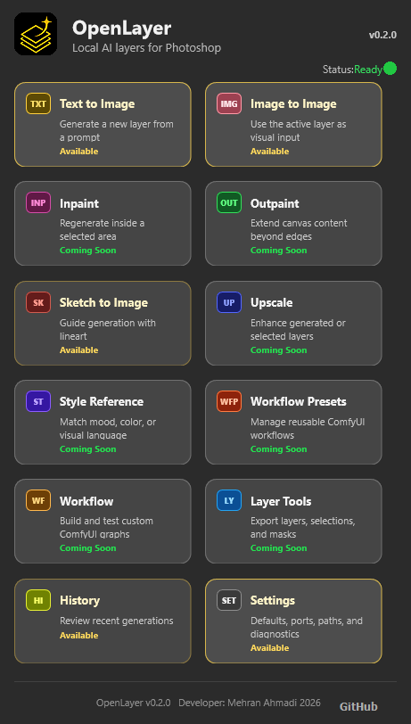

Home dashboard
Photoshop-dark tool cards expose Text to Image, Image to Image, History, Settings, and planned future tools without fake implementation.
OpenLayer is an open-source Photoshop UXP plugin for local ComfyUI text-to-image, image-to-image, and sketch-to-image workflows. Generate, reinterpret an active layer, guide a result with LineArt ControlNet, then preview and import the result as an editable Photoshop layer.
Artist-first foundation
OpenLayer starts with dependable local workflows: text-to-image generation, image-to-image, a first Sketch to Image LINECN path, canvas capture, panel previews, and import into the active document. The goal is a clean base that can grow into deeper layer, mask, and selection workflows without rushing fake features.
MVP features
Photoshop-dark tool cards expose Text to Image, Image to Image, History, Settings, and planned future tools without fake implementation.
Set a local server URL, find common active local ports, check availability, and load checkpoints from ComfyUI.
Send prompt, negative prompt, size, steps, CFG, seed, and checkpoint into a starter workflow.
Capture the active Photoshop layer or visible canvas, preview the source, upload it to ComfyUI, and generate through a starter img2img workflow.
Capture a layer or canvas, run a starter SD 1.x LineArt ControlNet workflow, preview the result, and import it back to Photoshop.
Keep SD3 and Flux-style checkpoints visible with compatibility warnings while keeping img2img-basic focused on SD 1.x and SDXL.
Retrieve generated output through ComfyUI history and view endpoints, then show it in the panel.
Place the generated image into the active document manually, or enable optional auto-import after generation.
Remember local defaults and review recent generated previews during the current panel session.
Detect the GPU and VRAM reported by ComfyUI, then show beginner-friendly model and workflow guidance in Settings.
Separate checkpoint-based presets from future diffusion-model-stack presets such as Z_image_Turbo and Flux without enabling unvalidated workflows.
Built with vanilla TypeScript and responsive spacing rules that avoid browser APIs and layout features that are fragile in Photoshop UXP.
ComfyUI, Photoshop, UI, workflow, and utility modules are separated for careful next steps.
Current build



Workflow
Setup
npm install
npm run buildSelect the generated dist/manifest.json, click Load, then open the OpenLayer panel in Photoshop.
python main.py --listen 127.0.0.1 --port 8190Find or check ComfyUI, optionally detect GPU recommendations, choose a checkpoint, generate, preview, and import the result into the active document.
OpenLayer defaults to http://127.0.0.1:8190 so it can run beside other local tools that may already use port 8188.
Known limitations
txt2img-basic, img2img-basic, and sketch2img-linecn-basic are starter workflows, not final production presets.epicrealism_naturalSinRC1VAE.safetensors and control_v11p_sd15_lineart_fp16.safetensors.Tester checklist
http://127.0.0.1:8190.dist/manifest.json in Adobe UXP Developer Tool.Check ComfyUI.sketch2img-linecn-basic, and import the result.Roadmap
Stable text-to-image, preview, import, checkpoint selection, and setup docs.
Image-to-image starter workflow, Sketch to Image LINECN foundation, active-layer and canvas source preview, ComfyUI upload, experimental checkpoint warnings, and result import.
Better image-to-image controls, inpainting, layer export, selection masks, upscaling, and guided generation workflows.
OpenLayer is early, practical, and open for contributors who care about artists, local workflows, and clean Photoshop integration.
Explore the repository